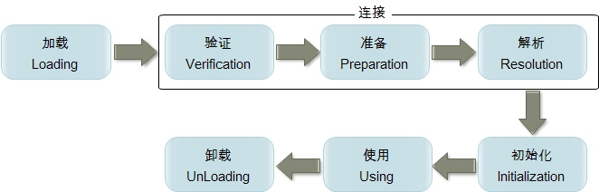

Ch04-Java 之 类的整个生命周期
August 15, 2017
其中类加载的过程包括了加载、验证、准备、解析、初始化五个阶段。在这五个阶段中，加载、验证、准备和初始化这四个阶段发生的顺序是确定的，而解析阶段则不一定，它在某些情况下可以在初始化阶段之后开始，这是为了支持 Java 语言的运行时绑定 (也成为动态绑定或晚期绑定)。另外注意这里的几个阶段是按顺序开始，而不是按顺序进行或完成，因为这些阶段通常都是互相交叉地混合进行的，通常在一个阶段执行的过程中调用或激活另一个阶段。

1. 类的生命周期 #
1.1 加载 #
查找并加载类的二进制数据，加载时类加载过程的第一个阶段，在加载阶段，虚拟机需要完成以下三件事情：
- 通过一个类的全限定名来获取其定义的二进制字节流。
- 将这个字节流所代表的静态存储结构转化为方法区的运行时数据结构。
- 在 Java 堆中生成一个代表这个类的 java.lang.Class 对象，作为对方法区中这些数据的访问入口。
加载.class 文件的方式
从本地系统中直接加载 通过网络下载.class 文件 从 zip，jar 等归档文件中加载.class 文件 从专有数据库中提取.class 文件 将 Java 源文件动态编译为.class 文件
1.2 验证 #
确保被加载的类的正确性，这一阶段的目的是为了确保 Class 文件的字节流中包含的信息符合当前虚拟机的要求，并且不会危害虚拟机自身的安全。
验证阶段大致会完成 4 个阶段的检验动作：
- 文件格式验证：验证字节流是否符合 Class 文件格式的规范；例如：是否以 0xCAFEBABE 开头、主次版本号是否在当前虚拟机的处理范围之内、常量池中的常量是否有不被支持的类型。
- 元数据验证：对字节码描述的信息进行语义分析 (注意：对比 javac 编译阶段的语义分析)，以保证其描述的信息符合 Java 语言规范的要求；例如：这个类是否有父类，除了 java.lang.Object 之外。
- 字节码验证：通过数据流和控制流分析，确定程序语义是合法的、符合逻辑的。
- 符号引用验证：确保解析动作能正确执行。
1.3 准备 #
准备阶段是正式为类变量分配内存并设置类变量初始值的阶段，这些内存都将在方法区中分配。
该阶段有以下几点需要注意
- 这时候进行内存分配的仅包括类变量 (static)，而不包括实例变量，实例变量会在对象实例化时随着对象一块分配在 Java 堆中。
- 这里所设置的初始值通常情况下是数据类型默认的零值 (如 0、0L、null、false 等)，而不是被在 Java 代码中被显式地赋予的值。
- 对基本数据类型来说，对于类变量 (static) 和全局变量，如果不显式地对其赋值而直接使用，则系统会为其赋予默认的零值，而对于局部变量来说，在使用前必须显式地为其赋值，否则编译时不通过。
- 对于同时被 static 和 final 修饰的常量，必须在声明的时候就为其显式地赋值，否则编译时不通过；而只被 final 修饰的常量则既可以在声明时显式地为其赋值，也可以在类初始化时显式地为其赋值，总之，在使用前必须为其显式地赋值，系统不会为其赋予默认零值。
- 对于引用数据类型 reference 来说，如数组引用、对象引用等，如果没有对其进行显式地赋值而直接使用，系统都会为其赋予默认的零值，即 null。
- 如果在数组初始化时没有对数组中的各元素赋值，那么其中的元素将根据对应的数据类型而被赋予默认的零值。
- 如果类字段的字段属性表中存在 ConstantValue 属性，即同时被 final 和 static 修饰，那么在准备阶段变量 value 就会被初始化为 ConstValue 属性所指定的值。
1.4 解析 #
把类中的符号引用转换为直接引用，解析阶段是虚拟机将常量池内的符号引用替换为直接引用的过程，解析动作主要针对类或接口、字段、类方法、接口方法、方法类型、方法句柄和调用点限定符 7 类符号引用进行。符号引用就是一组符号来描述目标，可以是任何字面量。
1.5 初始化 #
初始化，为类的静态变量赋予正确的初始值，JVM 负责对类进行初始化，主要对类变量进行初始化。在 Java 中对类变量进行初始值设定有两种方式，声明类变量是指定初始值，使用静态代码块为类变量指定初始值。
JVM 初始化步骤
- 假如这个类还没有被加载和连接，则程序先加载并连接该类
- 假如该类的直接父类还没有被初始化，则先初始化其直接父类
- 假如类中有初始化语句，则系统依次执行这些初始化语句
类初始化时机
只有当对类的主动使用的时候才会导致类的初始化，类的主动使用包括以下六种
- 创建类的实例，也就是 new 的方式
- 访问某个类或接口的静态变量，或者对该静态变量赋值
- 调用类的静态方法
- 反射 (如 Class.forName(“com.pdai.jvm.Test”))
- 初始化某个类的子类，则其父类也会被初始化
- Java 虚拟机启动时被标明为启动类的类 (Java Test)，直接使用 java.exe 命
1.6 使用 #
类访问方法区内的数据结构的接口，对象是 Heap 区的数据。
1.7 卸载 #
Java 虚拟机将结束生命周期的几种情况
- 执行了 System.exit() 方法
- 程序正常执行结束
- 程序在执行过程中遇到了异常或错误而异常终止
- 由于操作系统出现错误而导致 Java 虚拟机进程终止
2. 类加载 #
2.1 JVM 类加载器 #
| 类加载器 | 说明 |
|---|---|
| 启动类加载器 | Bootstrap ClassLoader，负责加载存放在 JDK\jre\lib(JDK 代表 JDK 的安装目录，下同) 下，或被-Xbootclasspath 参数指定的路径中的，并且能被虚拟机识别的类库 (如 rt.jar，所有的 java.*开头的类均被 Bootstrap ClassLoader 加载)。启动类加载器是无法被 Java 程序直接引用的 |
| 扩展类加载器 | Extension ClassLoader，该加载器由 sun.misc.Launcher$ExtClassLoader 实现，它负责加载 JDK\jre\lib\ext 目录中，或者由 java.ext.dirs 系统变量指定的路径中的所有类库 (如 javax.*开头的类)，开发者可以直接使用扩展类加载器 |
| 应用程序类加载器 | Application ClassLoader，该类加载器由 sun.misc.Launcher$AppClassLoader 来实现，它负责加载用户类路径 (ClassPath) 所指定的类，开发者可以直接使用该类加载器，如果应用程序中没有自定义过自己的类加载器，一般情况下这个就是程序中默认的类加载器 |
2.1 JVM 类加载机制 #
| 加载机制 | 说明 |
|---|---|
| 全盘负责 | 当一个类加载器负责加载某个 Class 时，该 Class 所依赖的和引用的其他 Class 也将由该类加载器负责载入，除非显示使用另外一个类加载器来载入 |
| 父类委托 | 先让父类加载器试图加载该类，只有在父类加载器无法加载该类时才尝试从自己的类路径中加载该类 |
| 缓存机制 | 缓存机制将会保证所有加载过的 Class 都会被缓存，当程序中需要使用某个 Class 时，类加载器先从缓存区寻找该 Class，只有缓存区不存在，系统才会读取该类对应的二进制数据，并将其转换成 Class 对象，存入缓存区。这就是为什么修改了 Class 后，必须重启 JVM，程序的修改才会生效 |
| 双亲委派机制 | 如果一个类加载器收到了类加载的请求，它首先不会自己去尝试加载这个类，而是把请求委托给父加载器去完成，依次向上，因此，所有的类加载请求最终都应该被传递到顶层的启动类加载器中，只有当父加载器在它的搜索范围中没有找到所需的类时，即无法完成该加载，子加载器才会尝试自己去加载该类 |